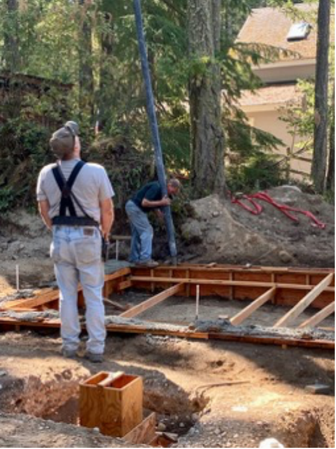

Blakely Island, WA remained beautiful, the sunsets stunning, the eagles soaring, and the Salish Sea sparkling. In Part II of our construction adventure, by early September we remained under construction. The master bedroom, bathrooms, and kitchen would remain useable, so we decided to stay in the house. Despite the challenges, I was intrigued to see what was involved in building an additional new entrance, and new roof on an island without ferry access.
At the end of Part I, we were awaiting the new building inspector’s approval for a concrete pour for the new addition foundation and new peaked roof for our island vacation home. He made it to the island, the inspection was successful, and we moved ahead.

The next milestone would be the concrete pour. An unanticipated delay, thanks to driver shortages and heavy summer workload, meant the concrete truck could not get to Blakely for over three weeks. This gave the team the opportunity to prepare more forms for what would have been a second pour. After passing a second inspection of the remaining forms, we were ready for the concrete.
The concrete truck wouldn’t be able to drive around the house because of trees, so a boom would have to go over the house (an advantage to the soon-to-be-replaced flat roof?) and, by necessity, go through the deck to reach the forms on the waterside. That meant boards in the deck had to be removed.
If you recall the first installment of this tale, you’ll remember we entered the house by going around the house, under the deck, up the stairs, and in from the deck. With that no longer possible, we climbed in the front door using a make-shift ramp. Getting luggage and groceries inside now required standing in what would eventually be crawl space and sliding our purchases along a make-shift bridge over the foundation forms.
The morning of the concrete pour, one of the construction team made an “interesting” suggestion. He told us that since the boom that would channel the concrete over the roof and into the waterside forms weighs 4 tons, we should consider not being inside the house… “just in case.” Hmmm. Sounded like good advice. We watched with anticipation as the first of two large trucks navigated our tree-lined driveway. One small tree had to be removed to make room for passage. At 24,000 pounds (22 tons written on the side of the truck), the pump/boom truck arrived first. Because of the slope of the job site, the truck was leveled by extending supports that lifted the front tires a foot in the air.
|
22 tons of pump/boom truck arrive. |
Solving the slope challenge |
Slowly, the huge boom unfolded itself like the legs of a praying mantis, reaching at the height of its curve over 60 feet in the air and clipping off a few Douglas fir branches. For those of us accustomed to seeing high rise construction in Chicago, this should have seemed a minor operation, but its scale on our forested lot was astonishing.
|
120 plus feet of tubing about to stretch over the house. |
The concrete truck arrives. xxxxxxxxxxxxxxxx xxxxxxxxxxxxxxx xxxxxxxxxxxxxxxxxxxxxxxxx xxxxxxxxxxxxxxxx |
The concrete truck arrived about 30 minutes later, on a separate barge with its white barrel turning (I missed the red and white stripes of the Ozinga trucks in Chicago). The operator connected it to the pump/boom truck and the grey ooze began to flow through the boom tube and an added flexible pipe that the workmen wrestled into the prepared forms.
 |
|
The pour continues over the house and through the deck. |
The pour continues over the house and through the deck. |
The pour went quickly. The boom first filled the near side and then easily cleared the roof and deposited its load on the waterside of the house. The process required constant vibration to remove air bubbles and compact the cement, followed by hand-smoothing of the surface and redistributing the wet concrete. This was all new to me and strangely fascinating. Now it would take several days for the concrete to set, the forms to be removed and prep to begin for installing the floor joists.
|
Hand-smoothing the concrete |
Forms removed |
With the forms removed, an emulsion was painted on the outside of the concrete to make it waterproof. Meanwhile, lumber for the floor was delivered along with trusses for the new peaked roof. It proved to be a busy morning at the marina as the Island Express water taxi arrived to drop off groceries and pick up a departing family at the same time. There was just room for everyone. We wouldn’t be ready for the trusses until the walls were framed out, so the trusses had to be transported to a nearby airplane hangar for temporary storage.
Our lumber and trusses had filled the barge completely. Since one of the trucks remained on Blakely, we were able to fit our Xterra on it for a trip back to the mainland for a much needed “spa day” at the Nissan dealer in Burlington. We’d be without a car for several days until a spot on another barge opened up to return it. And no, it usually can’t be scheduled in advance, unless you need to charter the whole barge yourself. The joys of partial barge loads and island logistics!
With the concrete work done, our gangplank entry to the house disappeared. We realized that if we moved one small sofa from the furniture and box-filled guest room to the living room, we could move other furniture and boxes enough to permit entry to the house from the work zone through the guest room’s siding door.
We continued to rearrange our building materials and boxes as we settled in to our less-thanelegant construction site living. Until the roof comes off, we could use the living room for more than building material storage. Our single table, a card table hastily retrieved from the storage shed, was our “partners desk” with each of us commanding one side with our laptops.
We also learned to reappropriate space for new activities. We used the card table for our first “dinner party,” a chili and cornbread repast for my cousin from Texas, in residence at the house she shares alternatively with her brother. Yoga mats fit in nearby.
By the week after Labor Day weekend, the addition’s floor joists were installed, and the floor laid. We’d have lumber for the walls the following week.
|
Floor joints in place |
Floor ready for wall framing |
We needed to retrieve our car the Friday of Labor Day weekend after its vacation on the mainland, A plan emerged to get the car back to Blakely. We arranged for our contractor to drive it from the dealer and park it by the Anacortes dock for the water taxi. Over the next three days, we’d take the water taxi to pick up the car and stopping to see friends en route, we’d visit two other islands by car ferry to connect with a barge heading back to Blakely. If this sounds complicated, it was and even more challenging to schedule! The great luxury was driving from the grocery store to the barge to our house with no intermediate loading and unloading of groceries!
A key question must have surely occurred to you by now. Why are we putting ourselves through this? We could have remained in Chicago and monitored the work remotely. Frankly, we’re used to juggling logistics, part of island life. Personally, I am learning a tremendous amount about construction, far outside my usual portfolio. There’s always the reason we have a home here in the first place. See the opening sentence of this report!
I had naively thought that Part II of our construction adventure would wrap up the story. It’s clear, however, that it’s time to pause again. So, if you’re still reading these dispatches, stay tuned once again. I hope to have another update in a month or two!